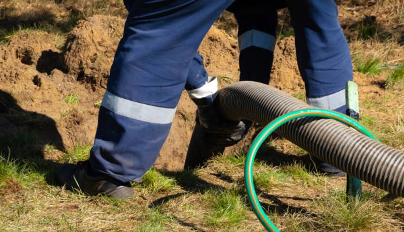

Event Planning
Porta Potty Guide for the Hotter'N Hell Hundred
Hosting a massive event? Learn exactly how many portable restrooms you need to keep thousands of cyclists and guests happy.
From Sheppard Air Force Base infrastructure projects to community events at Wichita Falls civic venues and military base operations throughout Wichita County, FixPilot provides portable sanitation that meets federal, state, and local compliance requirements. OSHA-certified, ADA-accessible, and always delivered on time — same-day service available.
No forms. No callbacks. Talk to a real dispatcher right now and lock in delivery.
Not sure how many units? Use our free porta potty calculator.
From Downtown to Burkburnett, our local fleet ensures rapid delivery to any zip code.
Every single unit goes through a rigorous multi-point sanitization process before delivery.
Whether you need one unit for a remodel or 200 for a cycling race, we have the stock.
We carry comprehensive liability insurance and ensure your site meets Texas health regulations.
From large public works projects near Sheppard Air Force Base to city-sponsored events and military facility compliance requirements throughout Wichita County, FixPilot provides portable sanitation that meets every specification. Our government-grade fleet is OSHA-certified, ADA-compliant, and available same-day across Wichita Falls.

Heavy-duty construction units for Wichita Falls job sites — serving Downtown Wichita Falls, Sheppard AFB, and remote Wichita County work sites. OSHA documentation provided on request. Same-day delivery available.

Upscale restroom trailers for Wichita County events from Downtown Wichita Falls fundraisers to MPEC Arena-area galas. Climate-controlled, beautifully appointed, and delivered same-day to Wichita Falls venues.

Affordable standard porta potties for Wichita County construction crews and Wichita Falls community events. Reliable, clean, on-time — serving Downtown Wichita Falls, Sheppard AFB, and MSU Texas campus daily.

Wheelchair-accessible units for Wichita County construction and Wichita Falls public gatherings. Extra turning radius, grab bars, and accessible seat height — ANSI A117.1 compliant for Sheppard AFB events.

Fresh-water portable sinks for Wichita County outdoor markets, Wichita Falls catering events, and MSU Texas campus job sites. Self-contained, no hookup required — bundle with porta potties for Wichita Falls.

Recirculating-flush units for Wichita Falls weddings and Sheppard Air Force Base-area upscale events in Wichita County. Real flushing action — the middle option between standard units and full luxury trailers.

Multi-stall restroom trailers for large Wichita Falls events near Sheppard Air Force Base and Sheppard AFB outdoor venues. A/C or heat, multiple stalls, and upscale fixtures for Wichita County festival crowds.

Septic pump-out and holding tank service for Wichita Falls construction sites in Wichita County. Emergency pumping for Downtown Wichita Falls and Sheppard AFB properties — 24/7 availability from our Wichita Falls team.

Marble countertops, LED lighting, stainless fixtures, and climate control — the gold standard for Wichita Falls galas and Sheppard Air Force Base-area VIP events in Wichita County. Every guest is impressed.

Deluxe units for Wichita County events and longer rentals: interior lighting, better ventilation, larger capacity. Popular for Downtown Wichita Falls and Sheppard AFB gatherings where standard units won't do.

After-hours emergency porta potty service for Wichita County: Downtown Wichita Falls construction emergencies, Sheppard AFB event backup, MSU Texas campus last-minute project starts. Wichita Falls same-night delivery available.

Designed specifically for multi-story commercial developments or difficult-to-access sites. These units feature integrated, heavy-duty steel slings allowing your crane operator to safely hoist sanitation directly to elevated floors, saving time.
Not sure what your site needs? Use this quick comparison guide to find the perfect sanitation solution for your guest count, job site, or event type in Wichita County.
| Unit Type | Best For | Key Features | Capacity (Approx) |
|---|---|---|---|
| Standard Porta Potty | Construction, Casual Events, Parks | Ventilated, Urinal, Hand Sanitizer | 1 per 10 workers / 50 guests |
| Flushable VIP Unit | Corporate Picnics, Backyards | Foot-pump flush, Hidden Waste, Sink | 1 per 40 guests |
| ADA Compliant Unit | Public Festivals, Code Compliance | Ground level access, Grab bars, Oversized | Required 1 per 20 std. units |
| Luxury Trailer (2-10 Stalls) | Weddings, VIP Areas, Film Sets | A/C, Running Water, Porcelain Toilets, Lights | 150 - 800+ guests |
Still unsure? We can calculate exact numbers for your site.
Call for Expert Sizing →Navigating Wichita County and Texas state regulations is critical to avoid fines and project delays. Our logistics team handles the placement strategy to keep your site 100% legal.

We believe in transparent, upfront pricing with zero hidden fees. While exact costs fluctuate based on inventory and season, your rental price in North Texas is determined by three main factors:
A standard event unit is our most affordable option, while multi-stall luxury AC trailers command a premium. Bulk orders for large sites receive scaled pricing.
Event units are typically billed on a flat weekend rate. Construction rentals in Wichita Falls are billed on a recurring 28-day cycle.
One cleaning per week is standard. For high-traffic sites where adding more units isn't physically possible, we can schedule twice-weekly or daily pumping.
Want an exact number for your project?
Call our local dispatchers. It takes less than 2 minutes to get a binding quote.
→
Securing sanitation for major North Texas events requires planning. Here is our recommended timeline to ensure inventory during peak months.
Aug - Sept. Book 8-12 weeks in advance. Due to massive regional events like the Hotter'N Hell Hundred, local inventory is heavily strained. Book early.
Mar - May / Oct - Nov. Book 4-6 weeks in advance. The mild Texas weather makes these prime months for outdoor weddings and festivals.
Dec - Feb. Book 1-2 weeks in advance. Availability is high for both event units and long-term construction rentals.
The biggest fear of renting a porta potty is the mess and the smell, especially in the Texas heat. We eliminate that completely. Our technicians follow a strict 4-point protocol.
Using high-powered vacuum trucks, we completely pump out all waste and transport it to approved Wichita County wastewater facilities.
All interior surfaces—walls, floors, urinals, and seats—are cleared of debris and vigorously scrubbed to remove dirt and grime.
We apply industrial-grade disinfectants. We then recharge the tank with a specialized blue deodorizing solution engineered to withstand the Texas sun.
We fully replenish all consumables, including high-capacity 2-ply toilet paper rolls and hand sanitizer dispensers, ensuring the unit is ready for use.
Wichita Falls is a dynamic Wichita County community where construction activity, outdoor events, and residential growth create year-round demand for reliable portable sanitation. From the corridors near Sheppard Air Force Base to the neighborhoods of Downtown Wichita Falls, Sheppard AFB, and MSU Texas campus, every part of Wichita County has a reason to call FixPilot — construction sites, events, or emergency backup near MPEC Arena.
Our Wichita Falls depot enables rapid same-day delivery to Downtown Wichita Falls and all of Wichita County.
Construction and event delivery to Sheppard AFB — same-day available throughout Wichita County.
Serving MSU Texas campus residential and commercial projects with OSHA-certified units.
Luxury restroom trailers and standard units for events and construction in Burkburnett.
Same-day delivery to Iowa Park and all surrounding Wichita County communities.
Serving contractors and event planners in Electra and throughout Wichita County.
Reliable porta potty service to Vernon, Downtown Wichita Falls, and all of Wichita County.
We also provide fast, reliable service to contractors and residents in these nearby Wichita County communities:
*Prices may vary by duration and location in Wichita County. Call for exact quote.
Get Your Free Wichita Falls Quote2026 Rental Cost Guide
Standard, deluxe & luxury pricing explained
How Many Units Do You Need?
Calculate the right number for your event or site
OSHA Compliance Guide
Requirements for construction sites
Construction Site Services
OSHA-compliant units for job sites
Luxury Restroom Trailers
VIP-grade trailers for weddings & events
Free Quote Calculator
Get an instant estimate in 60 seconds
The portable sanitation market in Wichita Falls operates at three scales simultaneously. At the large scale: multi-month construction contracts at Sheppard Air Force Base-adjacent commercial developments and infrastructure projects spanning Wichita County's most active corridors — Downtown Wichita Falls, Sheppard AFB, and MSU Texas campus. At the event scale: luxury restroom trailers for Wichita Falls's wedding circuit near MPEC Arena and outdoor festivals in Downtown Wichita Falls and Burkburnett. At the residential scale: single-unit homeowner rentals throughout Iowa Park and Wichita County's established neighborhoods.
Wichita County's construction activity shapes FixPilot's Wichita Falls service more than any other factor. General contractors building near Sheppard Air Force Base, developers expanding into MSU Texas campus and Burkburnett, and infrastructure contractors working throughout Sheppard AFB and Iowa Park all need reliable OSHA-compliant portable sanitation delivered on a documented weekly schedule. Our Wichita Falls team has learned the access protocols, permit requirements, and delivery windows for every active construction corridor in Wichita County.
MPEC Arena and the surrounding Downtown Wichita Falls entertainment district anchor Wichita Falls's event sanitation segment. Corporate events, outdoor weddings, multi-day festivals, and private Sheppard AFB gatherings throughout Wichita County require premium restroom facilities that standard construction rental companies don't stock. FixPilot's Wichita County event fleet — luxury trailers, deluxe units, ADA-compliant options — was built specifically for Wichita Falls's quality-conscious event market.
Wichita Falls's Wichita County construction market is driven primarily by military operations, government infrastructure, and public works centered around Sheppard Air Force Base and extending throughout the Downtown Wichita Falls and Sheppard AFB development corridors. Active job sites in MSU Texas campus and Burkburnett keep a consistent contractor workforce active in Wichita County year-round, generating steady demand for OSHA-compliant portable restrooms with documented weekly service schedules. FixPilot maintains dedicated Wichita County inventory to serve same-day construction deliveries to Downtown Wichita Falls, Sheppard AFB, and every active construction zone in the Wichita Falls metro. The Sheppard Air Force Base corridor represents the highest-demand construction zone in Wichita County, where projects range from commercial mixed-use development to infrastructure upgrades along the Iowa Park perimeter.
Wichita Falls's event market is anchored by annual gatherings near MPEC Arena and throughout the Downtown Wichita Falls and MSU Texas campus entertainment corridors in Wichita County. The seasonal event calendar — outdoor concerts, community festivals, weddings at venues near Sheppard Air Force Base, and Wichita County civic gatherings — creates consistent premium portable sanitation demand from spring through fall. Luxury restroom trailers for upscale Sheppard AFB and Burkburnett event venues, standard units for large Wichita County community gatherings, and ADA-compliant options for public events near MPEC Arena are all part of FixPilot's Wichita Falls event service offering. The growing outdoor wedding venue market in Iowa Park and MSU Texas campus reflects Wichita Falls's emergence as a destination for outdoor celebrations throughout Wichita County.
Contractors working in Downtown Wichita Falls, event planners organizing gatherings near MPEC Arena, and homeowners in Burkburnett and Iowa Park managing Wichita Falls renovation projects choose FixPilot over competitors because our Wichita County-based operation delivers local expertise that national vendors cannot provide. We know the delivery windows, access requirements, and permit procedures for construction sites near Sheppard Air Force Base and throughout the Sheppard AFB development corridor. Our Wichita County dispatch team answers every call — no automated systems, no call centers routing your Wichita Falls order through another state. Same-day delivery is standard, not a premium, for all of Wichita County.
Crucial guides for event planning, heat management, and construction compliance in Wichita County.
Hosting a massive event? Learn exactly how many portable restrooms you need to keep thousands of cyclists and guests happy.

Keep your job site smelling fresh even in August. We break down the chemical solutions and servicing frequencies required for the heat.

Planning an elegant outdoor wedding near the river? See why climate-controlled luxury trailers provide the ultimate guest comfort.

Avoid TCEQ and OSHA fines on your commercial build. Learn exactly what is demanded for handwashing stations and sanitation capacity.
Porta Potty Rental in Fort Worth
Learn More →Porta Potty Rental in Lewisville
Learn More →Porta Potty Rental in Fort Worth
Learn More →Real feedback from contractors, event planners, and homeowners across North Texas.
"We use them for all our heavy construction builds out near Sheppard AFB. The units are rugged, the weekly pump-outs are incredibly reliable, and their crews are always professional."
Mike T.
Site Superintendent
"Rented a luxury restroom trailer for our outdoor wedding in Country Club Estates. The interior was flawless, the AC kept everyone comfortable, and it completely elevated the event."
Amanda J.
Bride
"We needed dozens of units and hand washing stations for a cycling event in Downtown Wichita Falls. Delivery was exactly on time, and everything was perfectly sanitized."
David R.
Event Director
Real answers for Wichita Falls customers. More questions? Call (833) 652-9344 anytime.
Same-day delivery to Wichita County is standard — not a premium service. Our Wichita Falls depot dispatches to Downtown Wichita Falls, Sheppard AFB, MSU Texas campus, Burkburnett, and Iowa Park daily. Orders placed before 2 PM in Wichita Falls arrive the same day. For emergency needs near Sheppard Air Force Base or in Iowa Park, call (833) 652-9344 and we'll confirm a delivery window for your Wichita County location immediately.
Yes — every Wichita Falls neighborhood is on our regular delivery route: Downtown Wichita Falls, Sheppard AFB, MSU Texas campus, Burkburnett, Iowa Park, and all communities in between across Wichita County. We've never declined a Wichita Falls-area order for location. Call (833) 652-9344 with your Wichita County address and we'll confirm same-day availability.
All FixPilot units at Wichita Falls job sites meet OSHA 29 CFR 1926.51 — one unit per 20 workers per 8-hour shift, positioned within 600 feet of the work area, serviced on schedule. We deliver an OSHA compliance spec sheet with every Wichita County construction order. Your Downtown Wichita Falls or Sheppard AFB job site will pass inspection without scrambling for paperwork.
Wichita Falls porta potty rental starts at $75/day for standard units — including weekly Wichita County service. Deluxe units with interior lighting run $100–125/day. ADA units for Wichita Falls permitted sites: $120/day. Luxury trailers for Downtown Wichita Falls and Sheppard AFB events: from $400/day. All rates include Wichita County delivery. The rate quoted for your Wichita Falls project is the rate on your invoice — no surprises.
FixPilot operates its own fleet in Wichita County — our drivers know Downtown Wichita Falls's access restrictions, Sheppard AFB's delivery windows, and the fastest routes to every Wichita Falls construction site. No subcontractors, no national call center routing your Wichita County order through another state. Every unit is hospital-grade sanitized before delivery. Call (833) 652-9344 — a real Wichita Falls-area dispatcher answers, 24/7.
Yes — Wichita County public infrastructure construction near MPEC Arena and throughout Downtown Wichita Falls and Sheppard AFB requires the compliance documentation and service reliability that government contracts demand. FixPilot provides OSHA-certified units, insurance certificates, ADA compliance, and service logs meeting Wichita County government audit standards. Delivery to any Wichita Falls public works site is same-day.
Yes — civic events sponsored by Wichita Falls and Wichita County government near Sheppard Air Force Base and MPEC Arena are regular orders for our Wichita Falls team. Public-gathering ADA requirements, health department service standards, and Wichita County permit coordination are all part of our standard service for publicly-sponsored events in Downtown Wichita Falls, Sheppard AFB, and throughout Wichita County.
Yes — secure perimeter deliveries in Wichita County including gated government facilities near Sheppard Air Force Base, restricted construction zones in Downtown Wichita Falls, and DOD installations near Sheppard AFB are handled with advance access coordination. Our Wichita Falls drivers carry required credentials and the Wichita County government division processes all security clearance requirements before dispatch. No last-minute access issues at any Wichita Falls secured site.
Yes — FixPilot's Wichita County compliance package for government contracts includes: $2M GL certificate of insurance naming Wichita Falls or Wichita County as additional insured, OSHA 1926.51 compliance certification, ADA/ANSI A117.1 documentation for accessible units, and service logs formatted for Wichita County government audit. We deliver this documentation package with the first delivery to any Wichita Falls government project.
Yes — DOD and military facility delivery near Sheppard Air Force Base and throughout Wichita County is handled with full access protocol coordination. We work with your contracting officer or base facilities contact for vehicle pass processing, delivery window confirmation, and OSHA documentation in DoD-preferred format. Our Wichita Falls government division has navigated Wichita County military base access requirements for years.
Yes — projects and events near Sheppard Air Force Base are among our most regular Wichita County deliveries. Our Wichita Falls drivers know the delivery windows, vehicle access requirements, and site coordination protocols for the Sheppard Air Force Base area. Same-day delivery is standard for Wichita County locations near Sheppard Air Force Base across Downtown Wichita Falls and Sheppard AFB. Call (833) 652-9344 for immediate availability confirmation.
MPEC Arena and the surrounding MSU Texas campus corridor are a regular part of our Wichita Falls service calendar. We've provided construction porta potties and luxury restroom trailers for events ranging from small private gatherings to large public events near MPEC Arena in Wichita County. Delivery timing, access coordination, and permit guidance for MPEC Arena-area projects are handled by our Wichita Falls team.
Our Wichita Falls emergency line (833) 652-9344 is answered live 24/7 — including nights, weekends, and holidays. Our Wichita County on-call driver covers Downtown Wichita Falls, Sheppard AFB, MSU Texas campus, and the full Wichita Falls metro for after-hours emergencies. Whether it's a Sheppard Air Force Base-area construction inspection failure or a last-minute event backup in Burkburnett, we dispatch immediately with no premium for after-hours service.